Introduction
This website provides comprehensive documentation on how to use smoltcp with the Routing Protocol for Low-power and Lossy Networks (RPL).
Smoltcp
smoltcp is a standalone, event-driven TCP/IP stack that is designed for bare-metal, real-time systems. Its design goals are simplicity and robustness. Its design anti-goals include complicated compile-time computations, such as macro or type tricks, even at cost of performance degradation. smoltcp is missing many widely deployed features, usually because no one implemented them yet.
RPL
The RPL protocol (RFC6550) is designed for networks that usually consist of low power devices and where the network is generally susceptible to packet loss. Read here if you want to know more about how the protocol works.
Using smoltcp
We're assuming that the final system configuration will use a stack with RPL routing protocol, using 6LoWPAN to convey IPv6 packets over an IEEE802.15.4 network.
1. Adding smoltcp to your Cargo.toml
To be able to use smoltcp in your project, you must add it as a dependency in your Cargo.toml file.
However, smoltcp uses a lot of feature flags for configuration and therefore the correct ones need to be added.
For a IEEE802.15.4 device using 6LoWPAN and RPL, the following is added in the Cargo.toml file:
[dependencies.smoltcp]
version = "0.9"
default-features = false
features = [
"medium-ieee802154",
"proto-sixlowpan",
"proto-rpl"
]
2. Implementing smoltcp::phy::Device for your platform
smoltcp needs to be able to accept incoming packets and transmit packets.
For smoltcp to do this, a connection needs to be made between the TCP/IP stack and the hardware.
This is done by implementing the smoltcp::phy::Device trait for the hardware:
#![allow(unused)] fn main() { extern crate smoltcp; use smoltcp::phy::DeviceCapabilities; pub trait RxToken { fn consume<R, F>(self, f: F) -> R where F: FnOnce(&mut [u8]) -> R; } pub trait TxToken { fn consume<R, F>(self, len: usize, f: F) -> R where F: FnOnce(&mut [u8]) -> R; } pub trait Device { type RxToken<'a>: RxToken where Self: 'a; type TxToken<'a>: TxToken where Self: 'a; fn receive(&mut self, timestamp: Instant) -> Option<(Self::RxToken<'_>, Self::TxToken<'_>)>; fn transmit(&mut self, timestamp: Instant) -> Option<Self::TxToken<'_>>; fn capabilities(&self) -> DeviceCapabilities; } }
3. Setting up the smoltcp stack
Once you have the Device trait implemented, an Interface can be created:
extern crate smoltcp; use smoltcp::wire::Ieee802154Address; fn main() { let ll_addr = Ieee802154Address::Extended([0x1, 0x2, 0x3, 0x4, 0x5, 0x6 0x7, 0x8]); // Create the device: let mut device = MyDevice::new(ll_addr); // Create the config for RPL: let mut rpl_config = smoltcp::iface::RplConfig::new(); // Create the configuration for the stack: let mut config = smoltcp::iface::Config::new(); config.hardware_addr = Some(ll_addr.into()); config.pan_id = Some(Ieee802154Pan(0xbeef)); // Add the RPL config: config.rpl = rpl_config; // Create the sockets: let mut sockets_buffer = [SocketStorage::EMPTY; 1]; let mut sockets = SocketSet::new(&mut sockets_buffer[..]); // Create the interface: let mut iface = smoltcp::iface::Interface::new(config, device)?; }
4. Polling the smoltcp stack
After the interface is created, the stack is ready to be polled (by calling the poll function on the interface).
Polling the stack transmits packets that were queued or handles received packets queued by the device.
If a packet is processed by the stack, the readiness of sockets might have changed.
Therefore, it is possible that the stack needs to be polled multiple times.
The poll_delay function returns an advisory wait time for calling poll the next time.
Calling poll before that time is only wasting energy, but is not harmful for the stack.
Calling poll after that duration might be harmful for the stack.
#![allow(unused)] fn main() { loop { iface.poll(Instant::now(), device, sockets); match iface.poll_at(Instant::now()) { Some(Instant::ZERO) => continue, Some(d) => sleep(d), None => sleep_until_new_packet(), } } }
5. You're all set 🎉 (for now)
That's it! There is nothing more that needs to be done, if you want a simple TCP/IP stack without sockets.
Routing Protocol for Low-Power and Lossy Networks
A Wireless Sensor Network (WSN) is a type of Low-Power and Lossy Network (LLN) that consists of small, constrained devices equipped with sensors and/or actuators. These devices are connected to the Internet and an end user through a central node known as the sink node. WSNs may include hundreds of these tiny, battery-powered devices that communicate with each other using short-range radio transmissions. In order to transmit data from one device to another, intermediate nodes act as relay nodes, forwarding the data along a multi-hop path towards the sink node. The use of low-power, lossy radio links, battery-powered nodes, and mesh topologies creates significant routing challenges for LLNs and WSNs.
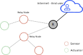
To address these challenges, the IETF Routing over Low-Power and Lossy Networks working group developed IPv6 Routing protocol for Low-power and Lossy Networks (RPL). RPL supports Point to Point (P2P), Multipoint to Point (M2P) and Point to Multipoint (P2M) traffic. P2P communication occurs between two nodes, M2P communication involves data being sent from multiple nodes to a central node, and P2M communication involves data being sent from a central node to multiple nodes. RPL uses upward and downward routes to facilitate these different types of traffic. Upward routes lead towards the root of the network, while downward routes start at the root and lead towards other nodes in the network.
Destination Oriented Directed Acyclic Graph (DODAG)
RPL specifies how to construct a Directed Acyclic Graph (DAG) rooted at a single destination, known as a Destination-Oriented DAG (DODAG), using an objective function and a set of metrics and constraints. The objective function evaluates a combination of metrics and constraints to determine the "best" path for packets to follow.
General Concepts
In a WSN, the neighbors of a particular node are all the nodes that can be reached via single hop radio links. In the example below, the neighbors of node 3 are: node 1, 2, 4, and 5.
The parents of a node are all its neighbors that are part of a possible route to the sink node. In the example below the parents of node 3 are node 1 and 2. The preferred parent of a node is the neighbor that is on the best route from the node to the sink, such as node 1 for node 3.
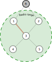
In a network using RPL, the rank of each node is a measure of its distance from the root node. This rank is determined using routing metrics, which include characteristics of both the links (such as throughput, latency, link reliability, expected transmission count, link quality level) and the nodes (such as energy state). These metrics are used in objective functions to calculate the cost of a route between nodes.
A RPL instance is a group of DODAGs that have the same RPL instance ID and share a common root node, identified by a DODAG ID. The DODAG version number is a counter that is incremented by the root node whenever a new version of the DODAG is created.
Control Messages, Upward and Downward Routes, Modes of Operation
The DODAG is created with the assistance of control messages, specifically ICMPv6 messages. The four types of control messages that RPL uses to construct the DODAG are:
• DODAG Information Object (DIO)
• Destination Advertisement Object (DAO)
• Destination Advertisement Object Acknowledgment (DAO-ACK)
• DODAG Information Solicitation (DIS).
RPL uses two types of routes to enable communication within a network: upward routes and downward routes. Upward routes are used for M2P communication and are discovered and maintained using DIO messages. Downward routes, on the other hand, enable P2M and P2P communication and are established using DAO messages.
RPL supports two modes of downward traffic: storing and non-storing. In the storing (fully stateful) mode, each node maintains a downward routing table and traffic travels only as far as a common parent node. In the non-storing (fully source routed) mode, all traffic is sent to the root node, which then uses source routes to send the traffic to its destination. This mode does not require each node to maintain a routing table, but it increases the dependency on the root node and the latency of the communication.
The exchange of control messages during the construction of the DODAG may vary depending on the mode of operation that is set for RPL. In some modes of operation, some of these messages may not be sent at all. The mode of operation determines the specific message exchange that occurs during the construction of the DODAG.
There are 4 modes of operation defined in RPL standard:
• MOP 0 = no downward routes maintained
In this MOP, DAO messages are disabled and the DODAG only maintains upward routes. This means that nodes will not transmit or will ignore the DAO messages. However, DIO and DIS messages are still sent. In this MOP, only M2P communication is possible.
• MOP 1 = non storing mode
In this MOP, both upward and downward routes are supported within the DODAG. Thus, DIO, DIS, and DAO messages are issued. As this is a non-storing mode, the DAO messages are sent to the root. In this MOP, all three types of communication are possible: M2P, P2M, and P2P. However, multicast is not supported in this MOP.
• MOP 2 = storing mode with no multicast support
In this MOP, support is provided for both upward and downward routes within the DODAG. This is achieved through the issuance of DIO, DIS, and DAO messages. As this is a storing mode, the DAO messages are sent to the preferred parent. In this MOP, all three types of communication are possible: M2P, P2M, and P2P. However, multicast is not supported in this MOP.
• MOP 3 = storing mode with multicast support
This MOP is similar to MOP2, but includes support for multicast.
The root and nodes that are already part of a DODAG advertise this MOP. The MOP is included in the DIO messages. In order to join the network, nodes must support the MOP advertised in the DIO messages, otherwise, they can only join the network as leaf nodes.
Mode of Operation 0: no downward routes maintained
First, there are constrained devices (nodes) that just woke up:
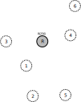
Then, one node decided that he wants to join a RPL network.
For that it sends a DODAG Information Solicitation (DIS) message.
This message is sent to the all-RPL-node IPv6 multicast address (ff02::a1).
This means that all nodes in the radio range of the sending node will receive it.
In the image below, node 1 is the one that decided to join a RPL network. The root node (R) and nodes 2 and 3 are in its radio range.
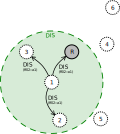
In the begining, only the root node has information about the RPL DODAG.
Therefore, it is the only one that can respond with a DODAG Information Object (DIO) packet.
The root node is also using the ff02::a1 multicast address. Thus, the DIO message will be received
by all the nodes in its radio range, including node 1.
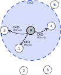
The nodes that received the DIO message and did not yet join a RPL network will join this network. They do that by selecting the root node (the sender of the DIO packet) as their parent. The nodes that join the network will also set their rank. The rank is computed based on the information received in the DIO message and link/node metrics with the help of the objective function.
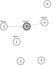
Because the nodes have selected a parent, they can start sending DIO packets as well. As stated before the DIO messages are sent via the all-RPL-node IPv6 multicast address. This means that all the nodes in the radio range of a node will receive the DIO message. When node 1 is sending the DIO message, the root, its current parent, will also receive it. The root node will ignore this message. This is because all nodes in a DODAG must ignore DIO messages from nodes with a higher rank, which guarantees optimal route selection and avoids loops.
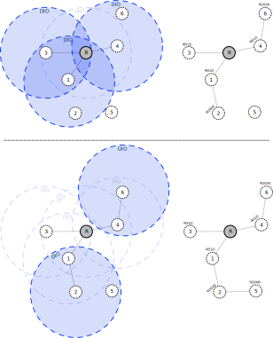
Maintenance of a RPL network
The DIO messages will be sent by nodes even after the DODAG is formed. The goal of sending DIO messages for the whole life of a RPL network is to maintain or upgrade the formed DODAG. However, the constant generation of control messages can consume a lot of energy. To preserve resources, the sending of control messages is minimized and only done when necessary, through the use of the Trickle Timer algorithm.
The Trickle Timer algorithm monitors the consistency of packet exchange in the network. If the pattern is consistent and free of redundant or outdated data, the Trickle Timer decreases the rate of sending DIO messages exponentially. However, if there are any inconsistencies in the network, the next DIO message is rescheduled and sent at the shortest possible time interval. In other words, this algorithm ensures that DIOs are aggressively advertised when the network is unstable and advertised at a slower pace when it is stable.
There are four parameters that control the functioning of the Trickle Timer:
• Imin, which represents the minimum time interval between two DIO messages
• Imax, which represents the maximun time interval between two DIO message
• k, which represents the redundancy constant (the number of redundant control messages)
• I, which represents the size of the current time-interval
At the start, I is set to a random value between Imin and 2 x Imin. DIO messages are sent when I expires and if the counter (c) that keeps track of the consistent received messages is smaller than k. If the network is stable, I is doubled until it reaches Imax. However, if inconsistencies are detected in the network, I is reset to a value between Imin and 2 x Imin. This ensures efficient use of resources while still being able to ensure the maintainance of the network.
M2P communication
In MOP 0, the network is configured such that only upward routes are established. This means that any node in the network can transmit messages to the root node or any other node on its path towards the root, but not to other nodes in the network. The default route, represented by the parent of the node, is used to transmit data packets in an upward direction. For example, node 5 can transmit messages to the root node or to nodes 2 and 5 (which are on the path towards the root) but cannot send messages to any other nodes within the network.
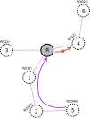
Mode of Operation 1: downward routes (non-storing mode)
In MOP 1 the message exchange for building a network starts the same way as it does in MOP 0: a node that wants to join a network will send a DIS message and the nodes that are already part of the network will respond with a DIO message.
In MOP 1 after receiving a DIO message and selecting the parent and setting the rank, the node will answer with a DAO message. In MOP 1 this message is sent to the root. The DAO message contains information about the parent of the node. The address of the preferred parent is transmitted in the Transit Information RPL option of the DAO message.
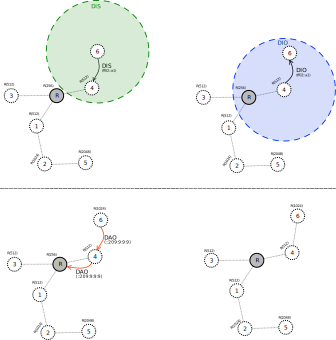
The node receiving the DAO message can answer with a DAO-ACK message.
P2M and P2P communication
In MOP 1, the network is configured such that both upward and downward routes are established. This means that the root can send data packets to the nodes in the network and that any node in the network can transmit messages to any other node.
When forwarding the packet upward the default route is used, until the packet is received by the root. In non-storing mode the root is the only node that has knowledge about all the children-parent relationships in the network. Based on this information the root adds a new header to the packet, the source routing header (SRH). In the address field of the SRH the path that the packet needs to follow toward the destination is inserted.
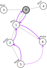
Mode of Operation 2: downward routes (storing mode, without multicast)
In MOP 2 the message exchange for building a network starts the same way as it does in MOP 0: a node that wants to join a network will send a DIS message and the nodes that are already part of the network will respond with a DIO message.
In MOP 2 after receiving a DIO message and selecting the parent and setting the rank, the node will answer with a DAO message. In MOP 2 this message is sent to the preferred parent. Based on the uinformation received through the DAO messages, all the nodes in the network will store a routing table containing information on how to reach all their descendants (all the nodes in their subtree).
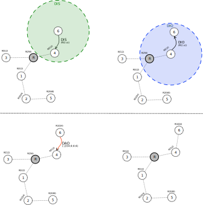
The node receiving the DAO message can answer with a DAO-ACK message.
P2M and P2P communication
In MOP 2, the network is configured such that both upward and downward routes are established. This means that the root can send data packets to the nodes in the network and that any node in the network can transmit messages to any other node.
When forwarding the packet upward the default route is used, until the packet is received by a common ancestor of the sender and receiver. The common ancestor will redirect the packet based on the information stored in its routing table.
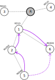
Mode of Operation 3: downward routes (storing mode, with multicast)
In MOP 3 the message exchange for building a network starts the same way as it does in MOP 0: a node that wants to join a network will send a DIS message and the nodes that are already part of the network will respond with a DIO message.
In MOP 3 after receiving a DIO message and selecting the parent and setting the rank, the node will answer with a DAO message with the address of the sender in the RPL Target Option. In MOP 3 this message is sent to the preferred parent and is then propagated towards the root. If the node is part of a multicast group (node 6 in the picture below), a second DAO message is sent to the preferred parent and propagated to the root. This message will contain in the RPL Target Option the multicast group address. This allows the root to know which nodes are part of a multicast group.
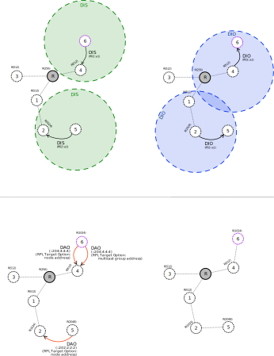
About the project
The goal of this project is to add the RPL protocol to the smoltcp Rust library.
The project is funded by NLnet NGI Assure.
More information about the project can be found on their website.